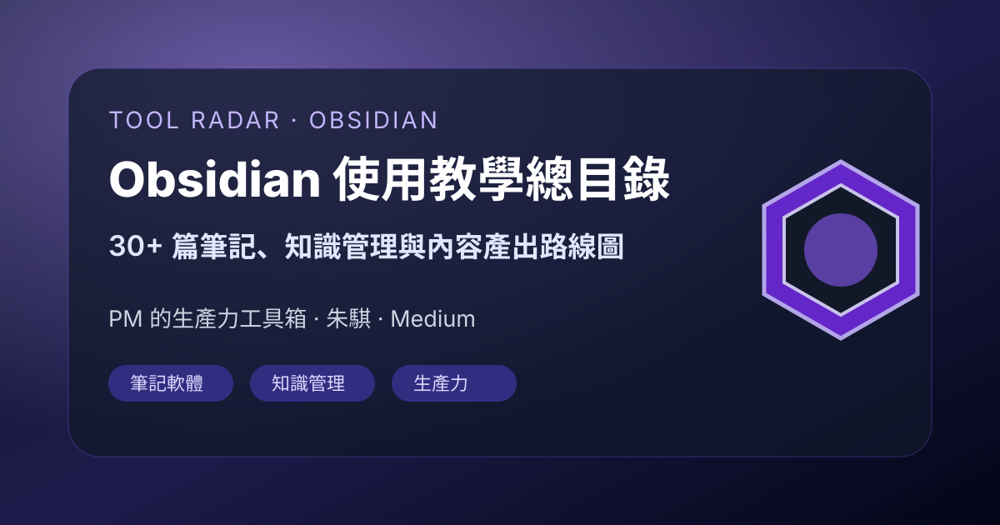

工具雷達｜Obsidian 使用教學總目錄：30+ 篇筆記與知識管理文章入口

一句話摘要
PM 的生產力工具箱 Medium 文章《【Obsidian 使用教學】總目錄 — 持續更新中》是一個 Obsidian 學習入口，作者 朱騏將 30 篇以上 Obsidian 教學文集中索引，後續新文章也會持續補進。適合當作 Obsidian 入門、筆記工作流、快捷鍵、複習流程、Graph View 與內容產出方法的路線圖。
來源與擷取狀態
- 原始來源：Medium「PM 的生產力工具箱」文章《【Obsidian 使用教學】總目錄 — 持續更新中》。
- 作者：朱騏。
- 文章 ID：2d23dce3ef02。
- 自動擷取狀態：Medium 對直接抓取回傳 Cloudflare 403；本次以原始 URL、搜尋結果摘要與可見標題建立索引型知識卡，保留原文連結供後續手動閱讀。
- 搜尋摘要可見重點：作者表示截至整理時已寫超過 30 篇以上 Obsidian 教學文，且 Obsidian 可以探索與學習的內容很多，後續會把最新文章持續加入此總目錄。
為什麼值得收藏
這篇不是單篇技巧文，而是 Obsidian 系列教學的入口頁。對剛開始建立個人知識管理系統的人來說，總目錄比零散搜尋更有價值，因為它能把入門設定、筆記流程、快捷鍵、複習、圖像化關聯與寫作產出串成一條學習路線。
可用學習路線
- 先從 Obsidian 的基本概念與筆記結構開始，避免一開始就陷入外掛堆疊。
- 接著看筆記篇與快捷鍵篇，建立日常捕捉、整理與回顧的肌肉記憶。
- 再延伸到應用篇，例如複習流程、內容產出、長期寫作與知識再利用。
- 最後補上 Graph View、外掛或視覺化工具，把筆記從資料倉庫變成可探索的知識網絡。
給欒帥的實用判斷
這篇可放在「工具雷達」長期參考區，適合未來需要：
- 幫學生或團隊設計 Obsidian 入門教材；
- 建立課程、研究或 AI 學習雷達的本地知識庫流程；
- 把 LINE／Telegram 分享內容沉澱成可回顧的個人知識系統；
- 比較 Obsidian 與 Notion、Google Docs、GitHub Pages 型知識庫的使用邊界。
原始連結
Medium 原文：
Readmore 入口：